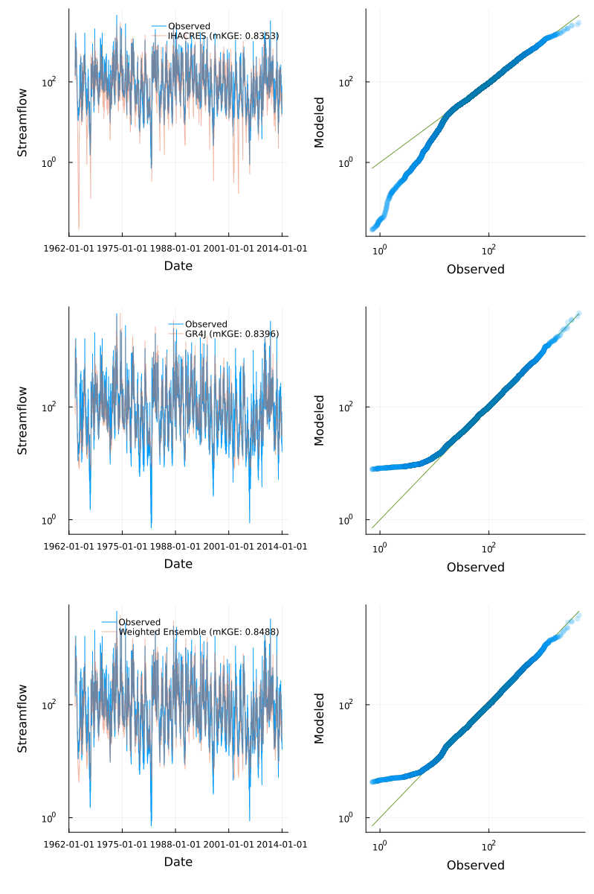
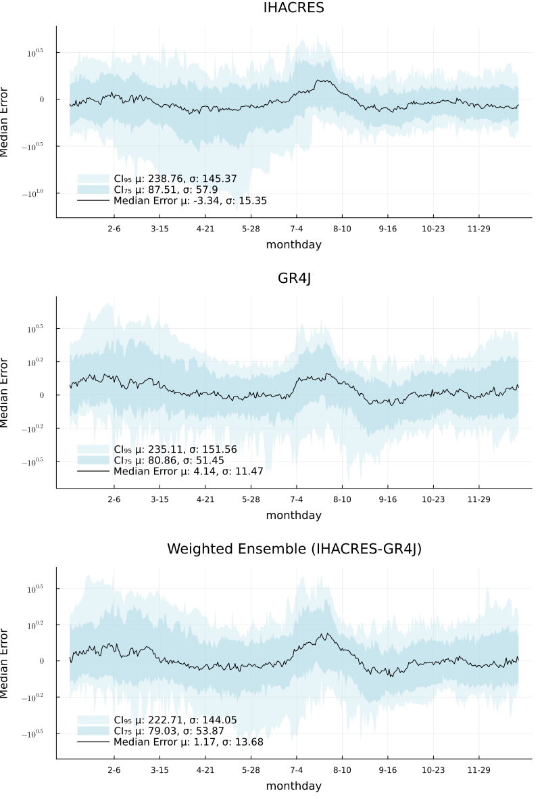
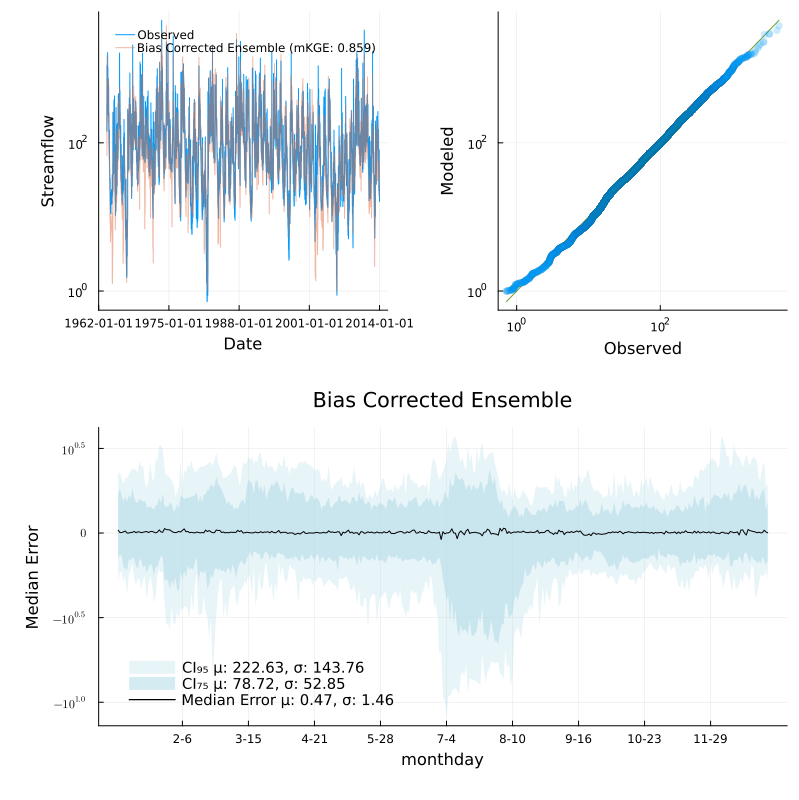

Weighted Ensemble Modeling
Streamfall supports ensemble modeling using individual instances of rainfall-runoff models as the ensemble constituents. The default ensemble is a normalized weighted sum.
The usual setup process is shown here, detailed in previous sections of this guide.
using Statistics
using CSV, DataFrames
using StatsPlots
using Streamfall
data_dir = joinpath(
dirname(dirname(pathof(Streamfall))),
"test/data"
)
# Historic flows and dam level data
obs_data = CSV.read(
joinpath(data_dir, "cotter/climate/CAMELS-AUS_410730.csv"),
DataFrame;
comment="#"
)
Qo = extract_flow(obs_data, "410730")
climate = extract_climate(obs_data)Specific node representations can then be created, each representing the same sub-catchment. A stream network is not considered for this demonstration.
# Create one instance each of IHACRES_CMD and GR4J
ihacres_node = create_node(IHACRESBilinearNode, "410730", 129.2)
gr4j_node = create_node(GR4JNode, "410730", 129.2)
# Create a weighted ensemble with equal weights
# The default behavior is to combine component predictions with a normalized weighted sum.
ensemble = create_node(WeightedEnsembleNode, [ihacres_node, gr4j_node], [0.5, 0.5])In previous examples, the calibrate!() method was used to calibrate nodes to available data. For WeightedEnsembleNodes, calibrate!() optimizes just the weights to allow for pre-calibrated instances to be provided for use in an ensemble. This may be useful if it is desired for the component models to be calibrated according to different criteria and objective functions.
A separate calibrate_instances!() method is available to calibrate individual component models (and the weights used).
# The default behaviour for WeightedEnsembleNodes are to calibrate just the weights.
# res, opt = calibrate!(ensemble, climate, Qo, (obs, sim) -> 1.0 .- Streamfall.NmKGE(obs, sim); MaxTime=180)
# Here, the component models are uncalibrated so we calibrate these and the weights.
res, opt = calibrate_instances!(ensemble, climate, Qo, (obs, sim) -> 1.0 .- Streamfall.NmKGE(obs, sim); MaxTime=180)Running the calibrated models directly, the amount of improvement to model performance can be assessed. Here, a 1-year burn in period is used.
run_node!(ihacres_node, climate)
run_node!(gr4j_node, climate)
run_node!(ensemble, climate)
burn_in = 365
burn_dates = timesteps(climate)[burn_in:end]
burn_obs = Qo[burn_in:end, "410730"]
ihacres_qp = quickplot(burn_obs, ihacres_node.outflow[burn_in:end], climate; label="IHACRES", log=true)
gr4j_qp = quickplot(burn_obs, gr4j_node.outflow[burn_in:end], climate; label="GR4J", log=true)
ensemble_qp = quickplot(burn_obs, ensemble.outflow[burn_in:end], climate; label="Weighted Ensemble", log=true)
plot(ihacres_qp, gr4j_qp, ensemble_qp; layout=(3, 1), size=(800, 1200))Below a small improvement to model performance based on the modified Kling-Gupta Efficiency score can be seen. Comparing the Q-Q plots, IHACRES had a tendency to underestimate low flows and high flows, whereas GR4J had a tendency to overestimate low flows.
The weighted ensemble combined characteristics of both, with a tendency to overestimate low flows as with GR4J.

Comparing the temporal cross section to get an idea of seasonality:
ihacres_xs = temporal_cross_section(burn_dates, burn_obs, ihacres_node.outflow[burn_in:end]; title="IHACRES", yscale=:log10)
gr4j_xs = temporal_cross_section(burn_dates, burn_obs, gr4j_node.outflow[burn_in:end]; title="GR4J", yscale=:log10)
ensemble_xs = temporal_cross_section(burn_dates, burn_obs, ensemble.outflow[burn_in:end]; title="Weighted Ensemble (IHACRES-GR4J)", yscale=:log10)
plot(ihacres_xs, gr4j_xs, ensemble_xs; layout=(3, 1), size=(800, 1200))A reduction in the median error can be seen with extreme errors reduced somewhat.

The median error can then be applied to modelled streamflow (on a month-day basis) as a form of bias correction. Here, the correction factor is capped to -80% and +40% of predicted outflows.
q_star = Streamfall.apply_temporal_correction(ensemble, climate, Qo[:, "410730"]; low_cap=0.8, high_cap=0.4)
bc_ensemble_qp = quickplot(burn_obs, q_star[burn_in:end], climate; label="Bias Corrected Ensemble", log=true)
bias_corrected_xs = temporal_cross_section(
burn_dates,
burn_obs,
q_star[burn_in:end];
title="Bias Corrected Ensemble",
yscale=:log10
)
ens_qp = plot(bc_ensemble_qp, bias_corrected_xs; layout=(2,1), size=(800, 800))It can be seen here that low flows are better represented, with a commensurate decrease in median error (and its variance). At the same time, performance at the 75 and 95% CI remain steady relative to the original weighted ensemble results.

This ensemble approach may be improved further by:
- Using a rolling window to smooth ensemble predictions
- Defining a custom objective function to target specific conditions
- Using more advanced ensemble approaches other than the simple weighted mean approach